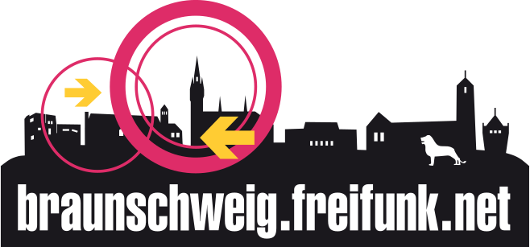
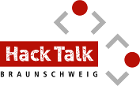
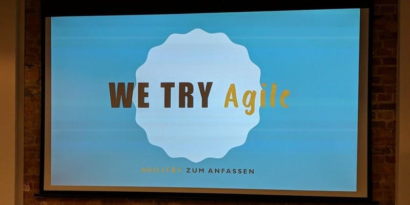

Reihenfolge alphabetisch.
| Gruppe | Beschreibung | |
|---|---|---|
| AWS User Group Braunschweig | Lokale AWS User Group. | |
| .NET Developer Group Braunschweig | Lokale .NET User Group. Monatliche Vorträge. | |
| Braunschweig Artificial Intelligence Meetup | "Fairly technical discussions regarding latest trends in artificial intelligence, with a clear focus on deep learning technologies." | |
| Braunschweig C++ Meetup | "This meetup is about people interested in C++ sharing their thoughts and findings on the subject." | |
| Braunschweig Kubernetes Meetup | "Dieses Meetup behandelt alle Themen rund um Kubernetes, Docker und Cloud-Technologien." | |
| Braunschweiger Technology Meetup | "Unser Meetup ist vor allem eins: Technologisch! Wir wollen Macher, Entwickler, Denker und Erfinder zusammen bringen." | |
| Digitalcourage Ortsgruppe Braunschweig | Ortsgruppe des Digitalcourage e.V. | |
|  | Freifunk Braunschweig | Aufbau eines regionalen und kostenfrei nutzbaren Datennetzes mit WLAN. |
| GDG Braunschweig | Google Developer Group mit Fokus auf App-Entwicklung. | |
|  | HackTalk | Monatlich stattfindende Treffen in kleinem Kreis mit 4 bis 15 Besuchern. Es gibt immer einen oder zwei Vorträge, über die im Anschluss geredet wird. Besonderheit: "Lean Forward", im Mittelpunkt steht der Austausch miteinander. |
|
|
JUG Ostfalen | Lokale Java User Group. Monatliche Vorträge mit teilweise vielen Besuchern (> 60). |
| Kotlin User Group Brunswick | User Group der Programmiersprache Kotlin. | |
| Royal JS | Lokale Java Script User Group. Treffen alle drei Monate. | |
| Stratum0 | Lokaler Hackerspace mit sehr vielen Initiativen und Veranstaltungen. | |
|  | We Try Agile | We try Agile wird organisiert von Lea und Marius, zwei agile Coaches aus dem Raum Braunschweig, die in der Region nach Agilisten zum Austausch suchen. |